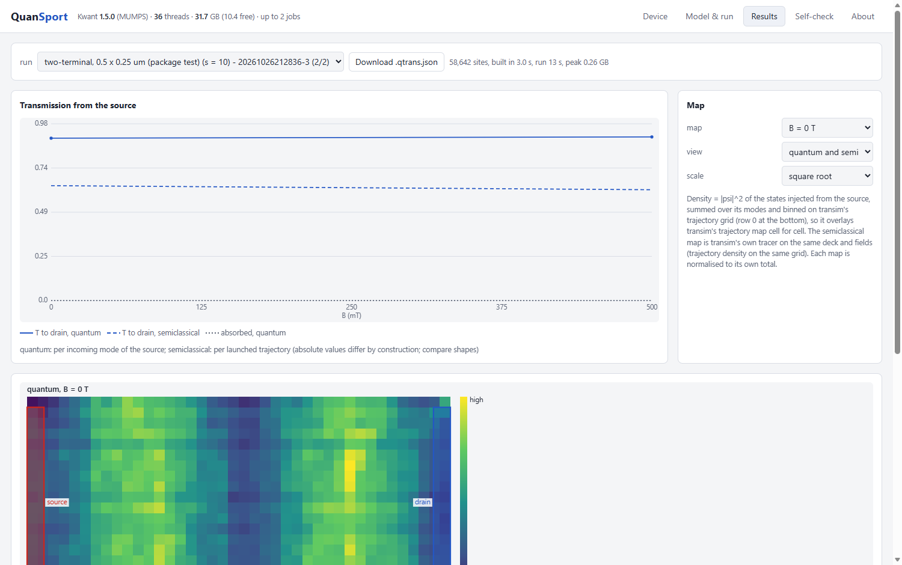

QuanSport
Quantum transport through graphene devices, computed with Kwant on your own PC. Open a TranSim device, run it, and see the quantum transmissions and current maps side by side with TranSim's semiclassical trajectories for the same device.

QuanSport is to Kwant what 2DMD is to LAMMPS: you set up and look at the device in a browser page, and Kwant does the calculation. It reads the devices of TranSim, the semiclassical transport simulator on this site (contacts, density maps, p-n junctions, reflectors), so the same device can be studied both ways: ballistic trajectories in TranSim, phase-coherent waves in QuanSport.
This is a test version, shared as it is. It runs on Windows and needs an internet connection the first time, to set up its own Python with Kwant. Questions and suggestions are welcome at pbog@dtu.dk.
Download for Windows
The program, TranSim's example devices, a small device to start with, its self-check tests, and an installer. About 9 MB; the installer then fetches about 1 GB (Python, Kwant, NumPy, SciPy) into a private folder that does not touch any other Python on the PC.
Download (zip)- Unzip it somewhere it can stay, for example in Documents.
- Double-click Install QuanSport.cmd (no administrator rights needed; it installs Node.js too if it is missing). If Windows warns about an unrecognised app: More info → Run anyway.
- Start QuanSport with the desktop icon, and read README.txt.
Before the first run: size
Every carbon site of the device is in the calculation (on a scaled lattice), so the cost grows with the area: about 4 kB of memory per site.
- Start with examples\small-two-terminal.transim.json: about 60 000 sites, two fields in about 15 seconds on an ordinary PC.
- TranSim's full-size example devices (several µm) need 3 to 12 million sites at the accurate scale: 13 GB of memory or more and 15 minutes or more per field. That is a workstation job.
- Make a device smaller in TranSim, save the project, and open it in QuanSport; the page shows the number of sites before you run.
What is in it
- Scalable tight-binding graphene (Liu et al., PRL 114, 036601 (2015)), so micrometre devices are within reach; the page warns when the scaled lattice no longer resolves the physics.
- p-n junctions rebuilt from the device's density map (Cayssol, Huard & Goldhaber-Gordon, PRB 79, 075428 (2009)); absorbing boundaries as a complex absorbing potential; the magnetic field as exact Peierls phases.
- Side by side: every run also traces TranSim's semiclassical trajectories through the same device, for the transmissions and the maps.
- Self-check: built-in tests that print ALL CLEAR — Kwant and its MUMPS solver, TranSim's devices read exactly as TranSim reads them, the semiclassical side against TranSim's reference, Klein tunnelling against the analytic result, absorbing boundaries, gauge, quantum Hall plateaus, magnetic focusing, and the lattice scaling.
About
QuanSport is made by Peter Bøggild at 2DPHYS, Department of Physics, Technical University of Denmark (DTU). Its scientific template is Bøggild et al., A two-dimensional Dirac fermion microscope, Nat. Commun. 8, 15783 (2017), included in the download. When you publish results, please cite Kwant: Groth, Wimmer, Akhmerov & Waintal, New J. Phys. 16, 063065 (2014).